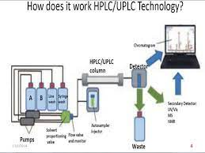

PQ
Before your equipment can be truly rated as qualified, you will need to put it through performance qualification. Your process performance qualification protocol will feature verification and documentation that all equipment is working within the accepted range as specified, does it perform as expected under real conditions. All instruments are tested together according to a detailed test plan and must generate reproducible results. Performance qualification protocols and validation should typically include but not be limited to: Data summary — A list of data that needs to be analyzed or recorded during the testing procedure Manufacturing conditions — Such as component inputs, operating parameters and equipment environment Calibration and validation Sampling plan — What sampling methods are used (if applicable) Analysis methodology Variability limits Nonconformance contingencies